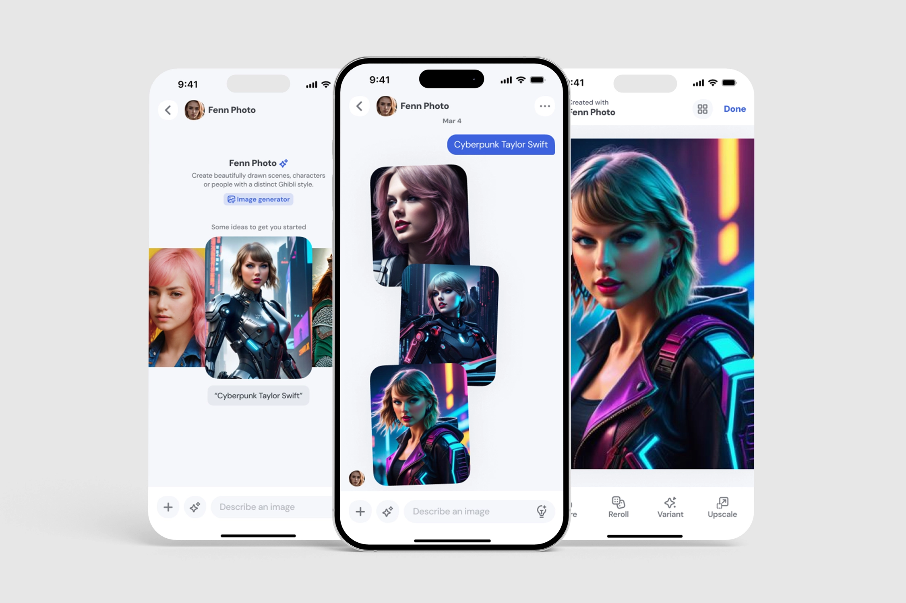
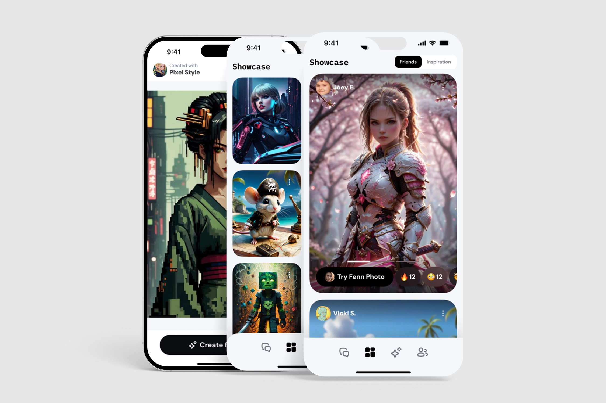
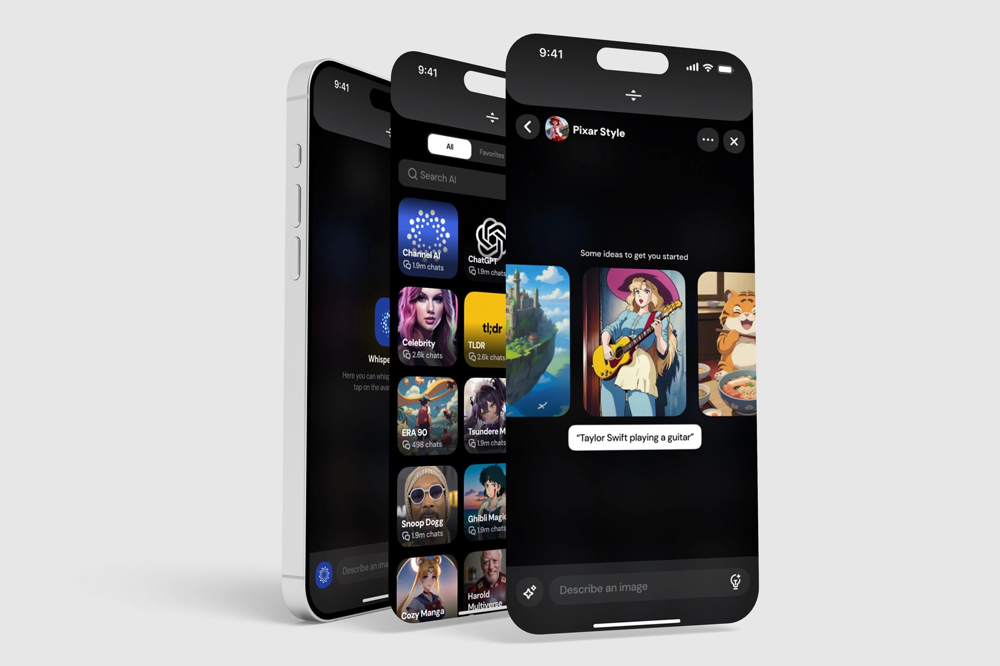
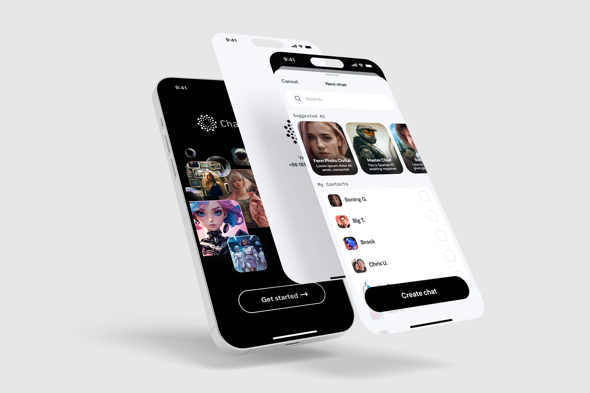
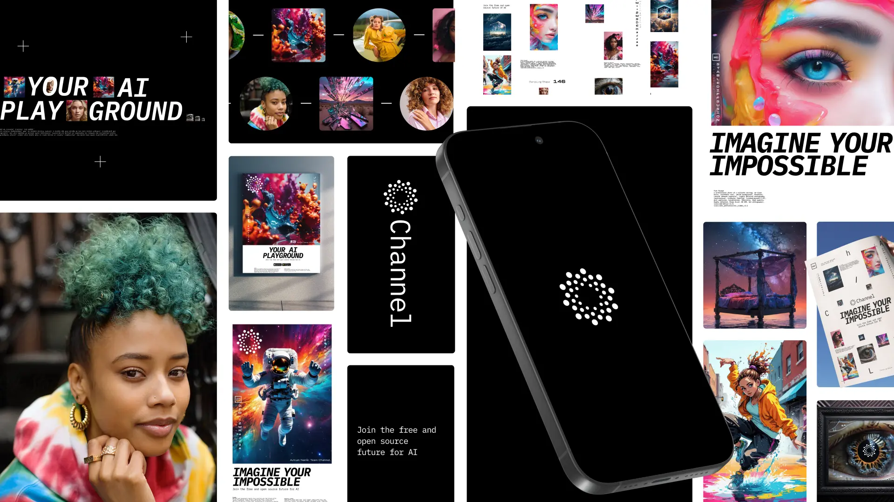

Channel AI
✨🪄Enhancing AI Connections Through Empathy🪄✨
Channel is an AI platform built around one goal: helping people build real, useful connections with AI. I focused on making AI interactions feel simple, intuitive, and human.
We didn’t want to just build another chatbot. We wanted to build something that felt personal, empathetic, and genuinely helpful.
Year
2023-Present
Role
Design Engineer
Sector
Generative AI

Key Offerings
- 01. Empathy is critical to designing AI-driven products. Understanding the user's mindset, journey, and goals ensures meaningful solutions.
- 02. Simplification often leads to better results. Removing unnecessary elements created a more accessible and enjoyable experience.
- 03. Collaboration, whether through user feedback or open-source contributions, strengthens design outcomes.
The challenge:
How do you design AI that feels more like a collaborator and less like a machine?We needed to:
- 01. Build trust through thoughtful design.
- 02. Keep things simple and accessible.
- 03. Design for adaptability over time.
- 03. Help users feel empowered without overwhelming them.

My approach:
- 01. Start with real users
We watched how people interacted with early versions and mapped key journeys and pain points. - 02. Define emotional and functional goals
We asked, "What should people feel when they use Channel?" That answer shaped everything from voice to visuals. - 03. Focus on what mattered most
With limited time and a small team, we focused on high-impact areas like onboarding, chat UX, and content quality - 04. Design and test quickly
We iterated daily using simple prototypes and real user feedback to sharpen the experience. - 05. Remove friction at every step
We simplified flows, reduced clutter, and created clean layouts that worked across devices. - 06. Explore bold ideas
We broke away from standard patterns, used a more playful tone, and leaned into AI as a co-creator, not just a tool.

The solution:
Empathetic AI
- Channel adapts to you. It learns your tone, remembers your preferences, and delivers results that feel personal.
Simple, human UI
- Clear layouts and intuitive interactions made it easy for anyone to explore and create with AI.

Built with the community
- We brought people into the process early. We used open-source tools and made community input part of how the product evolved.

What I Learned:
- 01. Empathy is essential in AI design.
- 02. Simplicity requires intention.
- 03. Great products are built with users, not just for them.
Impact:
- 25% increase in user satisfaction.
- 40% increase in user retention.
- 30% increase in adoption.
